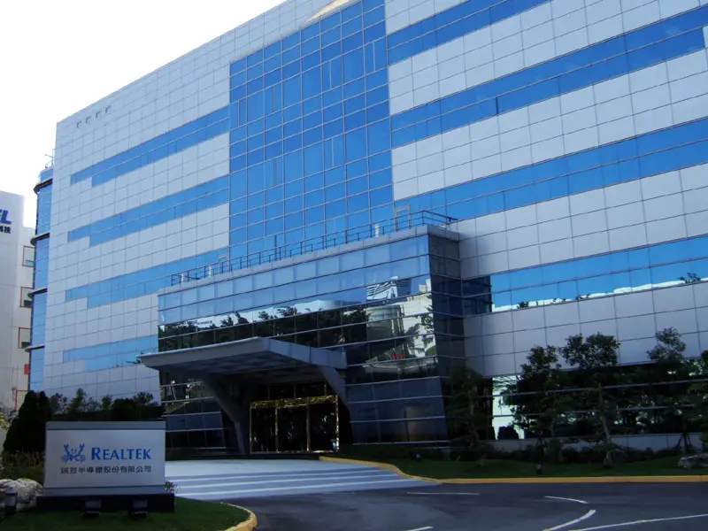

대표 로고대표 브랜드 마크
대표 로고대표 브랜드 마크리얼텍 Realtek
리얼텍(Realtek)은 중화민국 신주과학공원에 위치한 팹리스 반도체 기업이다. 1987년 10월에 설립되었으며 1998년 타이완 증권거래소에 상장되었고, 이더넷 컨트롤러와 무선 랜 솔루션을 개발했다.
최종 업데이트
리얼텍은 어떤 브랜드인가
리얼텍은 중화민국 신주과학공원에 본사를 둔 팹리스 반도체 기업이다. 정식 명칭은 리얼텍 반도체 주식회사이며 정체자로는 瑞昱半導體股份有限公司, 영어로는 Realtek Semiconductor Corp.로 표기한다.
1987년 10월에 설립되었고 1998년에 타이완 증권거래소에 상장되었다. 2015년 기준 직원은 2500명이며 그 가운데 78% 이상이 연구와 개발 전문 인원이다.
1997년 컴퓨텍스-타이페이에서 단일 칩 고속 이더넷 컨트롤러 RTL8139가 '최고의 부품'상과 '베스트 오브 쇼'상을 받았다. 2004년에는 RTL8185L과 RF 칩 RTL8255 컨트롤러를 포함하는 듀얼밴드 트리플모드 무선 랜 솔루션이 'Best Choice of Computex'상을 수상했다.
리얼텍은 어떻게 시작되고 성장했나
리얼텍은 1987년 10월에 설립되었고 1998년에 타이완 증권거래소에 상장되었다. 아방스 로직(Avance Logic, Inc.)은 1991년 캘리포니아주 프리몬트에서 설립된 하드웨어 제조업체로, 특히 OEM 제조업체를 위한 저가형 고집적 전자 부품 개발에 중점을 두고 2D 그래픽 및 오디오 분야에서 활발히 활동했다.
아방스 로직은 이르면 1995년에 리얼텍에 인수되었으며 2002년 말 리얼텍에 통합될 때까지 독립 자회사였다. 리얼텍의 오디오 솔루션은 접두사 "ALG"(Avance Logic Graphics) 및 "ALS"(Avance Logic Sound)로도 인식할 수 있는 아방스 로직 기술을 기반으로 한다.
리얼텍의 브랜드 아이덴티티는 무엇인가
연구와 개발 전문 인원이 직원의 78% 이상(2015년 기준)을 차지하는 중화민국의 팹리스 반도체 기업이며, 아방스 로직 기술을 오디오 솔루션의 기반으로 삼았다.
리얼텍의 대표 제품과 서비스는 무엇인가
대표 제품으로 단일 칩 고속 이더넷 컨트롤러 RTL8139가 있다. RTL8139는 1997년 컴퓨텍스-타이페이에서 '최고의 부품'상과 '베스트 오브 쇼'상을 받았다.
무선 랜 분야에서는 RTL8185L과 RF 칩 RTL8255 컨트롤러를 포함하는 듀얼밴드 트리플모드 무선 랜 솔루션을 선보였으며, 이 솔루션은 2004년 컴퓨텍스 타이페이에서 'Best Choice of Computex'상을 수상했다. 오디오 분야에서는 아방스 로직 기술을 기반으로 한 오디오 솔루션을 제공한다.
아방스 로직은 2D 그래픽과 오디오 분야에서 활동했고 3차원 가속기도 1990년대 중반에 개발했으나 널리 사용되지는 않았다.
리얼텍은 지금 어떤 상태인가
리얼텍은 중화민국 신주과학공원에 위치한 팹리스 반도체 기업으로, 1998년부터 타이완 증권거래소에 상장되어 있다. 2015년 기준 직원은 2500명이며 그 가운데 78% 이상이 연구와 개발 전문 인원이다.
아방스 로직은 2002년 말 리얼텍에 통합되어 더 이상 독립 자회사로 존재하지 않는다. 아방스 로직 기술은 리얼텍 오디오 솔루션의 기반으로 남아 있다.
리얼텍 로고는 어떻게 변해왔나
대표 로고대표 브랜드 마크사진으로 보는 리얼텍의 역사

자주 묻는 질문
리얼텍는 언제 설립되었나요?
리얼텍는 1987년 설립되었습니다.
리얼텍는 어떤 산업의 브랜드인가요?
리얼텍는 기술·전자 분야의 브랜드입니다.
리얼텍의 브랜드 아이덴티티는 무엇인가요?
연구와 개발 전문 인원이 직원의 78% 이상(2015년 기준)을 차지하는 중화민국의 팹리스 반도체 기업이며, 아방스 로직 기술을 오디오 솔루션의 기반으로 삼았다.
리얼텍의 대표 제품은 무엇인가요?
대표 제품으로 단일 칩 고속 이더넷 컨트롤러 RTL8139가 있다.
리얼텍는 현재 어떤 상태인가요?
리얼텍은 중화민국 신주과학공원에 위치한 팹리스 반도체 기업으로, 1998년부터 타이완 증권거래소에 상장되어 있다.
리얼텍의 본사는 어디에 있나요?
리얼텍의 본사는 신주시에 있습니다(위키데이터 기준).
리얼텍의 공식 웹사이트는 어디인가요?
리얼텍의 공식 웹사이트는 https://www.realtek.com/en/ 입니다.
출처와 검증
리얼텍 관련 참고: 공식 웹사이트 · 위키데이터 Q619364 · 한국어 위키백과 · 영어 위키백과. 브랜드명은 한글과 원어를 함께 표기하되 데이터에 없는 표기는 만들지 않습니다. 기원 국가·설립연도는 검수된 정의문에서 확인된 값을 우선하고, 없을 때만 공식 웹사이트 URL이 일치하는 위키데이터 개체의 값을 씁니다. 탄생일의 월·일은 위키데이터, 위키백과 정보상자, 본문 가운데 같은 연월로 확인되는 값만 싣고, 출처끼리 다르면 싣지 않습니다. 위키데이터 값은 2026-11-12 기준입니다.